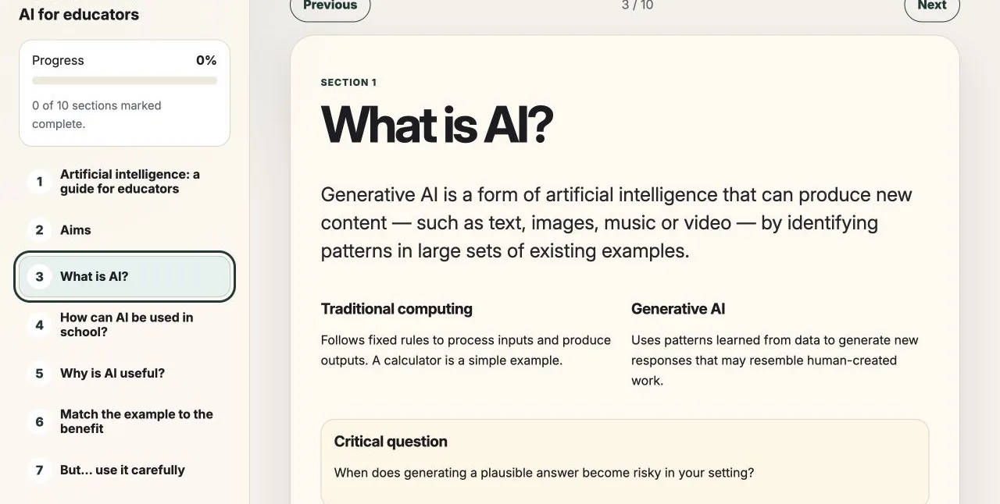
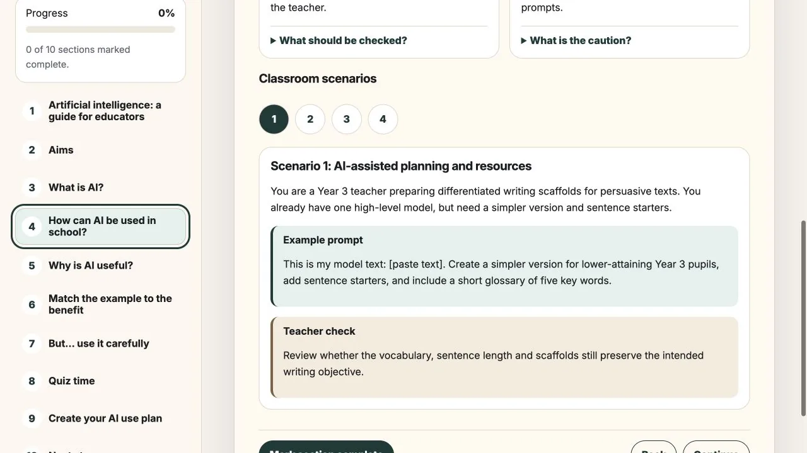
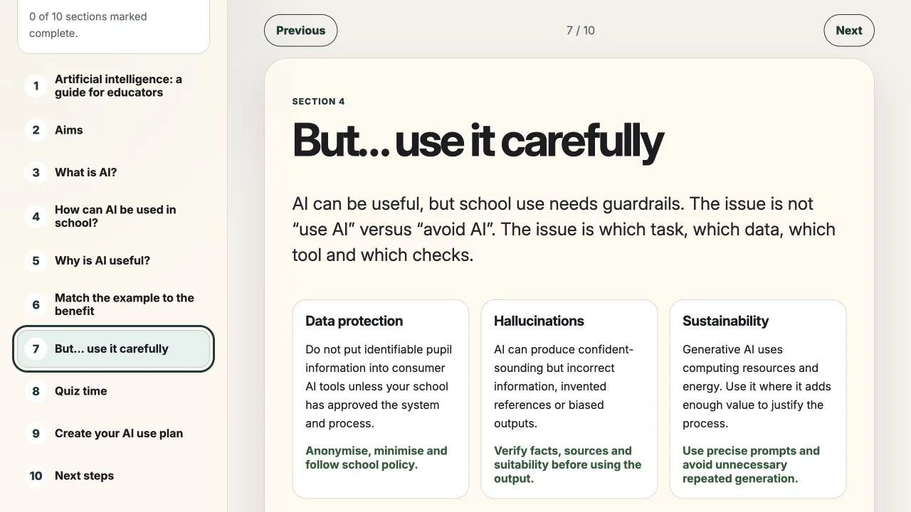
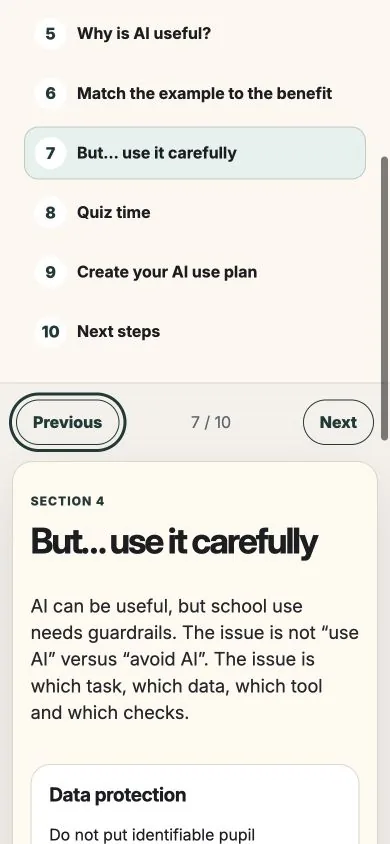
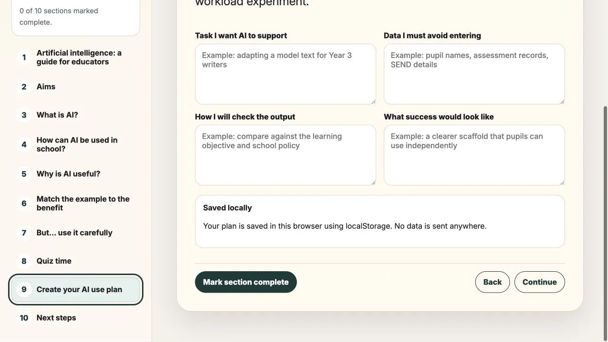

AI Educator CPD
Designing practical professional learning to help primary teachers use generative AI critically, safely and confidently.

Generative AI created a difficult professional-development problem: primary teachers needed a useful starting point, but the subject was changing quickly and carried real risks around pupil data, inaccurate outputs and uncritical adoption.
I designed and built a self-directed digital CPD module that moves from basic orientation to realistic school scenarios, risk checks and a small plan for responsible experimentation.
The result is a working, responsive learning product. Its effectiveness with teachers still needs evaluation.
The challenge
The challenge was not a shortage of AI information. Teachers were already encountering an excess of tools, claims and warnings. The more useful question was: what does a teacher need to understand and decide before using an AI-generated output in a real school context?
The experience needed to make AI understandable without oversimplifying it, connect abstract risks to familiar tasks and keep the teacher’s professional responsibility visible at every stage.
It also had to work as short, independent CPD without requiring a facilitator, user account or specialist learning platform, while avoiding the suggestion that AI was inherently beneficial or safe.
Three strategic decisions
I used three principles to keep the experience relevant, bounded and usable without a facilitator.
Start with teacher tasks, not AI products
Examples begin with planning, adapting resources and checking work so the technology remains connected to recognisable professional goals.
Keep professional judgement visible
Every scenario separates the situation, example prompt and teacher check. Outputs are positioned as material to review, not answers to accept.
End with a bounded experiment
The final plan asks teachers to identify one task, protected data, a checking method and a clear definition of success.
A learning journey from orientation to action
The ten-section experience uses a persistent navigation list, progress feedback and short interactions to make a longer topic feel manageable. Learners move through explanation, classroom examples, a matching activity, risk guidance, a knowledge check and an action plan.
Progress and planning notes are stored locally in the browser. This keeps the experience lightweight and removes the need to transmit the teacher’s draft plan to an external service.
- Understand
- Explore
- Practise
- Check
- Plan

Accessibility and responsible use
Responsible use is taught as a decision process: which task, which data, which tool and which checks. Guardrails cover data protection, hallucinations and sustainability, with direct actions teachers can take before using an output.
The interface uses semantic controls, visible keyboard focus, labelled progress, readable hierarchy and responsive layouts. Content is divided into short explanations and concrete decisions to reduce cognitive load for people who may be unfamiliar with AI. These are implemented accessibility measures, not a claim of formal WCAG conformance.
{kind=link}

{kind=link}

AI-assisted delivery with human review
I used AI to accelerate implementation while retaining control of the learning sequence, safeguarding boundaries, interaction choices and final review. Generated patterns were treated as drafts: I manually reviewed navigation, semantic controls, focus behaviour, local-storage messaging and responsive layouts before deployment.
- Research and content structure
- Interaction prototype
- AI-assisted implementation
- Manual QA and refinement

Outcome and limitations
The project produced a complete, self-contained learning experience rather than a static presentation or Figma prototype. Its ten connected sections combine interactive practice, progress tracking and a locally saved action plan, demonstrating the intended structure and safeguards across desktop and mobile.
Reflection and next steps
The central lesson was that responsible AI education should begin with the task, the data and the professional judgement required—not with the novelty of a tool. Making the teacher check visible throughout the journey helped keep that boundary clear.
The next step is moderated testing with teachers at different confidence levels. I would examine where learners pause or skip, whether the scenario structure supports transfer to their own work and whether the final plan feels specific enough to use. Findings would guide changes to content order, interaction support and the scope of the action plan.